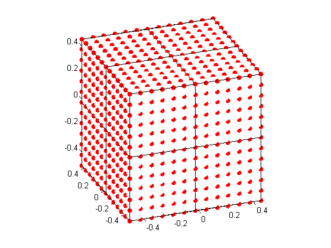

str = sprintf('WAVE SCATTERING PROBLEM: COMPARE SOLUTIONS OF TWO SYSTEMS S (ORIGINAL) AND P (REDUCED)\n');
disp(str);
c = 3*10^10;
f = 10^14;
k = 2*pi*f/c;
kappa = 0.9;
alpha = [1,0,0];
VolQ = 1;
a = 10^(-3);
d = ((a^(2-kappa))/VolQ)^(1/3);
M = round(1/d)^3;
P = round((M^(1/3))/7)^3;
N = ones(1,M);
n = ones(1,M).*sqrt(0.2);
n0 = ones(1,M);
draw = 01;
str = sprintf('\nINPUT');
disp(str);
printInputs(c,f,k,kappa,VolQ,a,d,M,P,alpha);
E = ScatteringCompare3D_SP(a,kappa,alpha,d,M,P,N,n,n0,draw);
str = sprintf('\nOUTPUT\n\nThe distance between the solutions of the S system (orignal) and the P system (reduced) is: %e', E);
disp(str);
WAVE SCATTERING PROBLEM: COMPARE SOLUTIONS OF TWO SYSTEMS S (ORIGINAL) AND P (REDUCED)
INPUT
Speed of light in optics: 30000000000
Frequency in optics: 100000000000000
Wave number k = 2pi/lambda: 20943.951024
Power const with respect to the radius of particles: kappa is in [0,1]: 0.900000
Volume of the domain Q that contains all particles: 1.000000
Radius of one particle: 0.001000
Distance between two particles: d = O(a^(1/3)): 0.079433
Number of particles, M: 2197
Number of small cubes after partitioning the big Q, P: 8
Direction of plane wave, alpha: [1 0 0]
Computing...
The reduced system P:
gmres converged at iteration 4 to a solution with relative residual 3.4e-016.
The original system S:
gmres stopped at iteration 10 without converging to the desired tolerance 1e-006
because the maximum number of iterations was reached.
The iterate returned (number 10) has relative residual 0.49.
nParticleCube =
343 294 294 252 294 252 252 216
OUTPUT
The distance between the solutions of the S system (orignal) and the P system (reduced) is: 5.502869e-006
